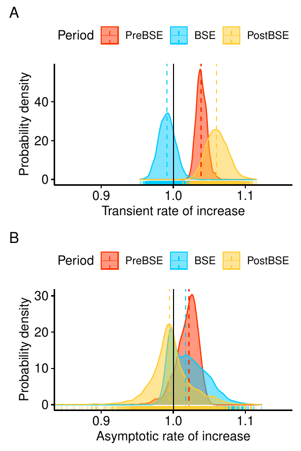

![]()
Open code and data

Abstract
Scavenging is a key ecological process controlling energy flow in ecosystems and providing valuable ecosystem services worldwide. As long-lived species, the demographic dynamics of vultures can be disrupted by spatiotemporal fluctuations in food availability, with dramatic impacts on their population viability and the ecosystem services provided. In Europe, the outbreak of bovine spongiform encephalopathy (BSE) in 2001 prompted a restrictive sanitary regulation banning the presence of livestock carcasses in the wild on a continental scale. In long-lived vertebrate species, the buffering hypothesis predicts that the demographic traits with the largest contribution to population growth rate should be less temporally variable. The BSE outbreak provides a unique opportunity to test for the impact of demographic buffering in a keystone scavenger suffering abrupt but transient food shortages. We studied the 42-year dynamics (1979–2020) of one of the world’s largest breeding colonies of Eurasian griffon vultures (Gyps fulvus). We fitted an inverse Bayesian state-space model with density-dependent demographic rates to the time series of stage-structured abundances to investigate shifts in vital rates and population dynamics before, during, and after the implementation of a restrictive sanitary regulation. Prior to the BSE outbreak the dynamics was mainly driven by adult survival: 83% of temporal variance in abundance was explained by variability in this rate. Moreover, during this period the regulation of population size operated through density-dependent fecundity and subadult survival. However, after the onset of the European ban, a 1-month delay in average laying date, a drop in fecundity, and a reduction in the number of fledglings induced a transient increase in the impact of fledgling and subadult recruitment on dynamics. Although adult survival rate remained constantly high, as predicted by the buffering hypothesis, its relative impact on the temporal variance in abundance dropped to 71% during the sanitary regulation and to 54% after the ban was lifted. A significant increase in the relative impact of environmental stochasticity on dynamics was modeled after the BSE outbreak. These results provide empirical evidence on how abrupt environmental deterioration may induce dramatic demographic and dynamic changes in the populations of keystone scavengers, with far-reaching impacts on ecosystem functioning worldwide.
Important figure

Citation
@article{Almaraz2022a,
title = {Long-term Demographic Dynamics of a Keystone Scavenger Disrupted by Human-induced Shifts in Food Availability},
author = {Almaraz, Pablo and Mart\'inez, F\'elix and Morales-Reyes, Zebensui and S\'anchez-Zapata, Jos\'e A. and Blanco, Guillermo},
date = {2022-09-03},
journaltitle = {Ecological Applications},
volume = {32},
number = {6},
doi = {10.1002/eap.2579}
}